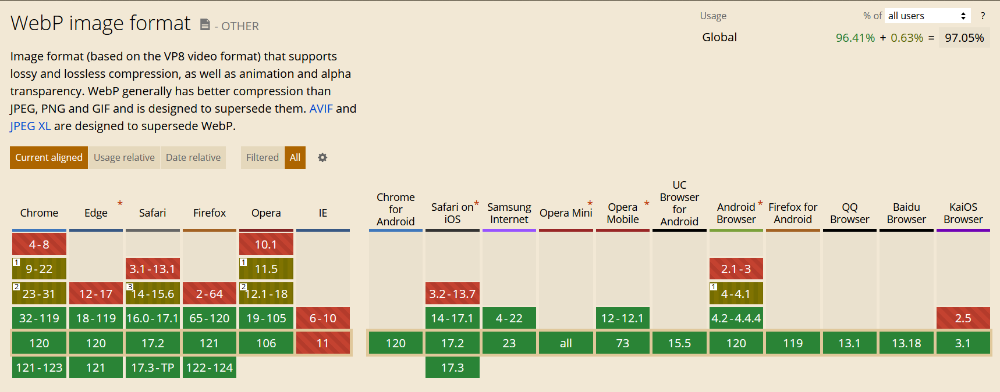

Wie weist du aus, dass eine HTML5-Seite HTML5 sein soll?
In der Doctype definition.
Erkläre die Bedeutung von "semantischen HTML5-Elementen".
Elemente die selbst keine Bedeutung haben. Nur in Zusammenhang mit anderen Elementen bekommt es eine Bedeutung.
Welche Software "braucht" semantisches HTML?
Zum Beispiel Suchmaschienen die von Tags wie header oder footer ein Ranking errechnen. Screenreader können mit solchen Informationen auch besser arbeiten.
Wie kannst du HTML5 auf "Richtigkeit" prüfen?
Mit einem tool wie zum Beispiel validator.w3.org.
Wie kannst du prüfen, welcher Browser (in welcher Version) ein bestimmtes HTML5-Feature schon beherrscht? Gib ein aussagekräftiges Bsp an.
Mit einem tool wie caniuse.com.
